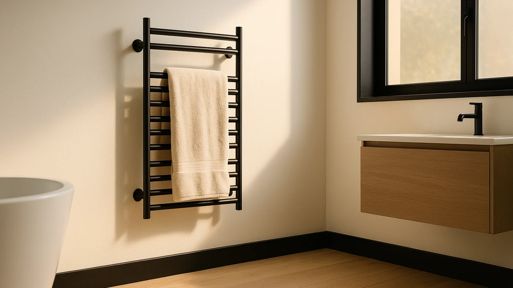

Best Are Towel Warmers Worth It (2026) | Best Towel Warmers
Prices and picks verified as of August 2026. Independent, reader-supported reviews.


Things to Know Before You Buy
- Running costs are low. Most plug-in models draw 100 to 150 watts, about the same as a couple of light bulbs, so daily use adds a few dollars a month.
- Bucket-style warmers heat folded towels in 10 to 15 minutes, while open bar racks dry towels between uses and double as storage.
- Hardwired and wall-mounted units need an electrician or a free wall, so factor installation into the total price.
- A built-in timer is the one feature that pays for itself, since it shuts the unit off instead of letting it run all day.
- Warm towels resist the mildew smell that damp towels develop, which matters most in humid or windowless bathrooms.
Are towel warmers worth it? For anyone who steps out of a hot shower into a cold bathroom, the answer comes down to comfort against a small running cost. A towel warmer keeps your towel warm, dry, and free of the damp, musty smell that builds up on a hook. Whether that justifies $40 to $200 depends on how cold your home gets and how much you value a warm towel on a winter morning.
Most buyers land in one of two camps. Some want pure comfort, a warm towel on a winter morning. Others care more about hygiene, because a heated rack dries a towel in an hour or two instead of leaving it wet all day. Both reasons hold up, and a single unit covers both at once.
So what does a towel warmer actually do? Which types can you buy, how do you pick the right one for your space, and where do buyers go wrong? Those are the questions worth answering before you decide if one belongs in your bathroom.
What You Need to Know
A towel warmer is a heated rack or enclosed bucket that raises your towel's temperature and pulls moisture out of the fibers. The wattage tells you most of what you need. Bar-style racks usually draw 60 to 150 watts and warm a towel over 30 to 45 minutes. Bucket warmers, which wrap heat around a folded towel inside an insulated drum, reach a usable temperature in 10 to 15 minutes and run hotter.
When you ask whether towel warmers are worth it, cost is the first worry, and it should not be. A 150-watt unit running two hours a day costs roughly $1.50 to $3 a month at average US electricity rates. That is less than a single coffee. The bigger spend is the purchase itself, which ranges from about $40 for a basic plug-in rack to $200 for a hardwired wall unit.
Comfort is the obvious draw, but the hygiene angle convinces a lot of buyers. A towel left damp on a hook stays wet for hours and grows the bacteria behind that sour smell. A warm rack dries it in one to two hours, which keeps it fresh between showers. If your bathroom has no window or weak ventilation, that alone can justify the buy. Once you know these basics, you can match a warmer to how you actually use your bathroom rather than to a marketing claim.
Types and Categories
Towel warmers split into three families, and the right one depends on your space and budget. Bar racks, sometimes called ladder racks, are the classic look: a series of heated rails that hold one or two towels. You will find them as freestanding plug-in units, wall-mounted plug-in models, and hardwired versions that an electrician wires into the wall. Freestanding racks cost the least and move anywhere with an outlet. Hardwired ones look built-in and blend into the decor, but they are the priciest and hardest to install.
Bucket warmers take a different approach. You fold a towel inside an insulated drum and a heating element warms it from all sides. These heat faster and run hotter than bar racks, so they suit anyone who wants a spa-warm towel on demand. The trade-off is that they hold less and take up floor or counter space.
The third category, towel warmer drawers, builds the heating element into a cabinet drawer. They cost more and usually require installation, but they hide completely and free up wall space. For most readers, a freestanding or wall-mounted bar rack is the sensible entry point. It covers warming and drying without a contractor, and you can test the habit before committing to anything built in.
How to Choose
Picking the right towel warmer comes down to five questions you can answer in a few minutes. Start with capacity. Count how many towels you need to warm at once. A solo user is fine with a compact bucket or a four-bar rack, while a family of four wants a six-bar ladder or a hardwired unit with wide rails. Buying too small is the most common regret, so size up if you sit between options.
Next, decide on installation. Freestanding plug-in models need only an outlet and zero tools. Wall-mounted plug-in units need a few screws and a stud. Hardwired racks need an electrician, which can add $100 or more to the total. If you rent, stick with freestanding or plug-in wall models you can take with you.
Then look at controls. A built-in timer is the feature worth paying for, because it shuts the unit off after a set period instead of running all day. Many models offer 2, 4, and 6-hour settings. Overheat protection and an auto-off function add a margin of safety, which counts for a lot in a home with kids.
Material matters for both looks and longevity. Stainless steel resists bathroom humidity and rust better than coated carbon steel, and a brushed or polished finish should match your fixtures. Finally, check heat-up time and surface temperature if you want that fast spa feel, since bucket warmers beat bar racks here. Weigh these factors against your own routine, because a renter in a mild climate has different needs than a homeowner in a cold one.
Common Mistakes to Avoid
A few avoidable mistakes turn a good purchase into a returned box. The first is buying for the wrong capacity. You see a sleek four-bar rack online, forget that bath towels are bulky, and end up unable to fit the whole household's laundry. Measure your towels folded and check the usable rail length before you order.
The second mistake is ignoring installation reality. Plenty of buyers fall for a hardwired unit's clean look, then learn they need an electrician and a nearby circuit. Read whether a model is freestanding, plug-in, or hardwired before you click buy, not after it arrives.
Skipping the timer is the third trap. A warmer with no auto-off runs every hour you forget it, which wastes power and shortens the element's life. If a model lacks a timer, plan to add a cheap outlet timer yourself.
Buyers also overspend chasing features they will never use. A $200 smart unit with app control sounds appealing, but a $60 rack with a 2, 4, 6-hour timer does the same daily job. Match the spend to your routine. A towel warmer disappoints fast when the unit is the wrong size, wrongly installed, or left running unattended. Sidestep those four errors and the odds of regret drop sharply.
Care and Maintenance
A towel warmer needs almost no upkeep, one more reason owners rarely regret the buy. Wipe the bars or the bucket interior every couple of weeks with a damp microfiber cloth and a mild cleaner. Hard-water spots and dust dull the finish over time, and a quick wipe keeps a stainless rack looking new.
Hang or fold towels that are damp rather than soaking wet. A dripping towel forces the element to work harder, leaves water pooling under a freestanding unit, and can leave mineral streaks as it evaporates. Give a towel a good wring or a short spin in the dryer first, then let the warmer finish the job.
Check the cord and plug every few months for fraying or heat damage, since these units run warm for hours. If one ever feels hotter than usual or smells of burning, unplug it and stop using it. For hardwired models, have an electrician look at any flickering or tripped breaker instead of guessing.
Once or twice a year, descale a bucket warmer if you live with hard water, using a diluted vinegar solution on the interior and a clean-water wipe afterward. None of this takes more than a few minutes a month. That low effort is a real selling point: you get the comfort with almost no ongoing work.
Our Top Picks
If you have decided a warm towel is worth the small running cost, these three picks cover the range from a premium wall-mounted rack to a fast-heating budget unit. Each suits a different bathroom and budget, so match the pick to how you shower.

Editor’s Pick
Heated Towel Racks for Bathroom
A wall-mounted heated rack with wide rails that warm two full bath towels at once. The build and finish justify the premium for a homeowner who wants a permanent, built-in look.
$189.99
Check Price on Amazon
Best Value
SAMEAT Heated Towel Warmers for
A plug-in rack that delivers steady warmth with no electrician and no big spend. The timer settings let you set it and forget it, which keeps the day-to-day cost negligible.
$79.94
Check Price on Amazon
Premium Choice
FLYHIT Large Towel Warmer for
A larger-capacity warmer for households that go through several towels a day. The extra rail space means nobody waits for a warm towel on a cold morning.
$79.99
Check Price on AmazonAre towel warmers expensive to run?
No.
Do towel warmers actually dry towels or just warm them?
They do both.
Frequently Asked Questions
Are towel warmers expensive to run?
No. Most plug-in towel warmers draw 60 to 150 watts, about the same as a couple of light bulbs. Run one two hours a day and you spend roughly $1.50 to $3 a month at average US electricity rates, less than a single coffee. A built-in timer keeps that figure down because it shuts the unit off after a fixed cycle.
Do towel warmers actually dry towels or just warm them?
They do both. A heated rack pulls moisture out of the fibers, so a damp towel that would sit wet on a hook all day dries in one to two hours. That keeps it warm to the touch and free of the sour, mildew smell that builds up on a hook. Open bar racks dry towels more thoroughly between uses, while bucket warmers focus on fast heat.
Can a towel warmer help with a musty towel smell?
Yes, and it is one of the strongest reasons to buy one. A towel left damp grows the bacteria behind that sour odor. A warm rack dries the towel quickly between showers, which keeps it fresh. In a bathroom with no window or weak ventilation, that benefit alone can justify the purchase.
Do you need an electrician to install a towel warmer?
Only for hardwired models. Freestanding units plug into any outlet and need no tools, and wall-mounted plug-in racks need a few screws and a stud. Hardwired racks wire directly into the wall and call for an electrician, which can add $100 or more to the cost. If you rent, choose a freestanding or plug-in model you can take with you.
How long does a towel warmer take to heat a towel?
It depends on the type. Bucket warmers wrap heat around a folded towel and reach a usable temperature in 10 to 15 minutes. Open bar racks warm more gently and take 30 to 45 minutes, since they also dry the towel as they heat it. If you want a hot towel the moment you step out, a bucket warmer is the faster choice.
Verdict
So, are towel warmers worth it? For most people who hate a cold, damp towel, yes. The running cost lands around $2 to $3 a month, the comfort shows up at every shower, and the hygiene benefit keeps towels fresh in bathrooms that never fully dry out. The decision is less about whether they work and more about matching the right type to your space and budget. A renter in a small apartment is well served by a plug-in bar rack, while a homeowner can go for a built-in unit. Our Editor's Pick, the R FLORY heated towel rack, suits anyone who wants a permanent, wide-rail rack that warms two towels at once and earns its higher price through build quality. If that feels like more than you need, a plug-in model with a timer delivers the same daily warmth for far less. Whichever route you take, a towel warmer is worth it when you size it correctly, install it sensibly, and let a timer handle the rest.